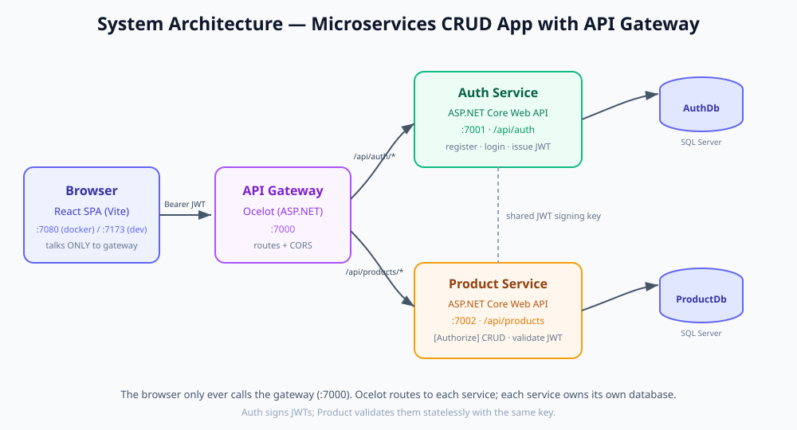
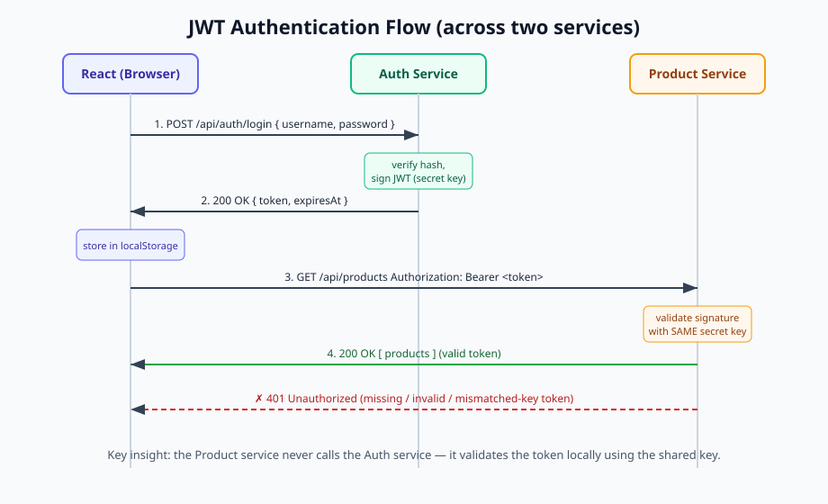
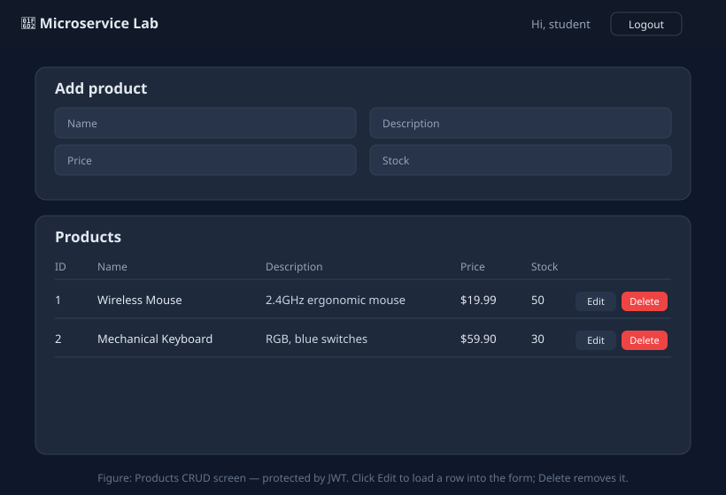
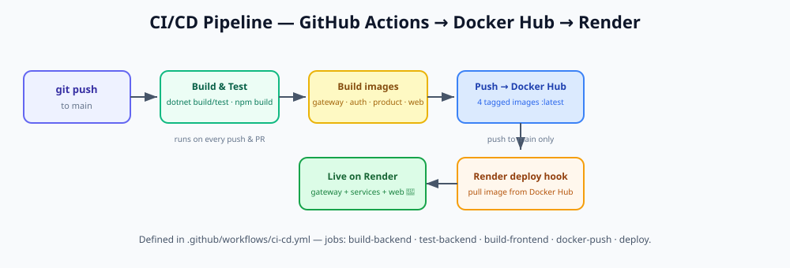

React · ASP.NET Core · Ocelot Gateway · SQL Server · Docker · Docker Hub · CI/CD · Render
A hands-on lab · use → / ← or Space to navigate
React (Vite) — calls only the gateway
Gateway + 2 ASP.NET Core Web APIs
SQL Server (one DB per service)
Docker · GitHub Actions · Docker Hub · Render
Here: an Auth service and a Product service (each with its own SQL Server database) behind an Ocelot gateway.

Authorization: Bearer <token>🔑 Golden rule: Jwt__Key, Jwt__Issuer, Jwt__Audience must be identical in both services — or you get 401.

No manual install — run it as a container:
docker run -e "ACCEPT_EULA=Y" \
-e "MSSQL_SA_PASSWORD=Your_password123" \
-p 14330:1433 --name lab-sqlserver -d \
mcr.microsoft.com/mssql/server:2022-latestHost port 14330 (non-default → no clashes). Each service creates its own DB on first run via EnsureCreated().
POST /api/auth/register and POST /api/auth/loginTokenService signs the JWT; returns { token, expiresAt }AuthDb/api/products[Authorize] on the controller → every route needs a valid JWTAddJwtBearer(...) validates issuer, audience, lifetime, signatureProductDb (seeded with 2 sample products)Demo: GET /api/products → 401 → Authorize → 200 🎉
localhost:7000/api/auth/* → :7001 and /api/products/* → :7002Authorization header — but the Product service still validates the JWTThree routing files, picked by ASPNETCORE_ENVIRONMENT:
ocelot.json (local) · ocelot.Docker.json (compose) · ocelot.Production.json (Render)
fetch wrapper; ONE base URL (the gateway); attaches the Bearer token
stores user + token in localStorage
Login · Register · Products (CRUD)
redirects anonymous users to /login
⚠️ Vite reads VITE_API_URL at build time — it's baked into the bundle.

docker compose up --buildlocalhost:7080 · Gateway → localhost:7000localhost:7001 · Product → localhost:7002 · SQL → localhost,14330ASPNETCORE_ENVIRONMENT=Docker → loads ocelot.Docker.jsonInside the compose network the DB host is sqlserver,1433, not localhost. #1 gotcha!
Frontend: Node builds → nginx serves the static files.

Build & test → build 4 images → push to Docker Hub (:latest + commit SHA) → tell Render to pull. Build once, deploy the exact image you tested.
Routes__*, CORSDeploy hooks + GitHub secrets → every push builds, pushes & redeploys. 🚀
AllowedOriginsocelot.*.json loaded, or wrong downstream hostlocalhost instead of sqlserverOcelot gateway · 2 ASP.NET services · JWT auth · SQL Server · React · Docker · Docker Hub CI/CD · Render
Questions? Open README.md for the full step-by-step.